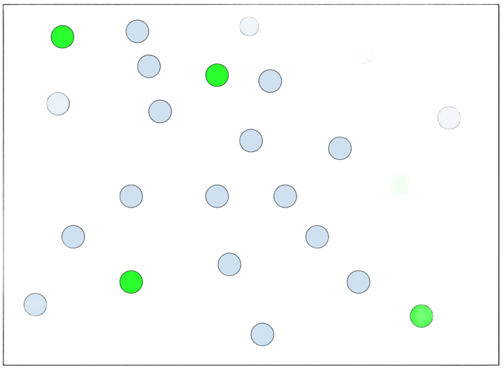
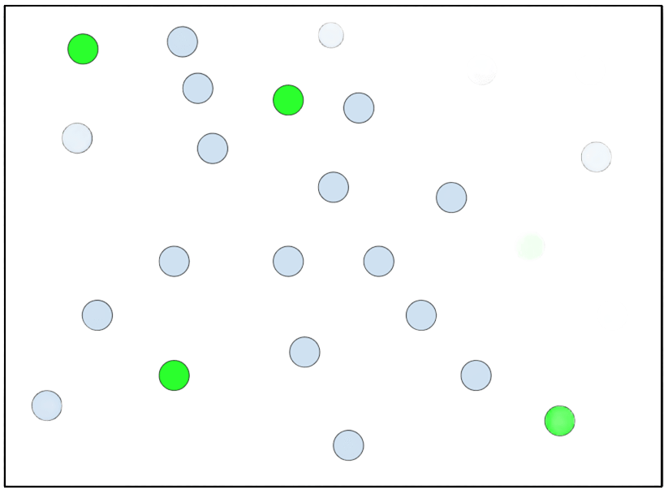
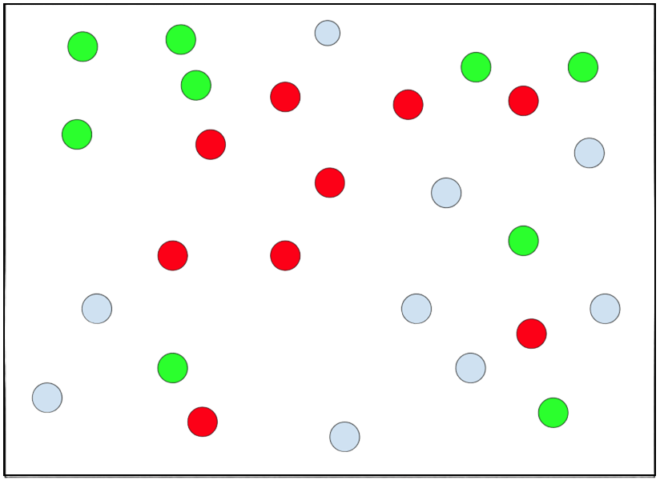
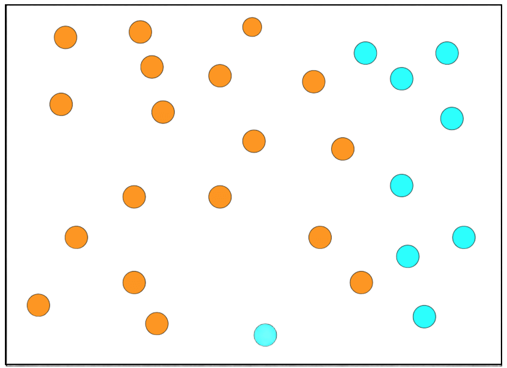
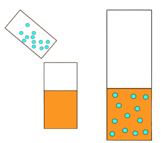
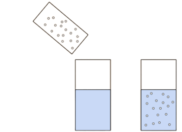
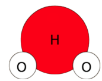

Mixtures vs Solutions vs Compounds
Introduction
Mixtures, solutions and compounds in chemistry are all combinations in two or more substances. They all have similarities between each other but are all different.
Mixtures
A mixture is when two or more substances are present in an area of space without any chemical reactions…

In this example, all the blue circles are not producing a chemical reaction with the green atoms. A mixture only consists of physical combinations. Meaning that color, shape, state of matter, etc may change. Many common drinks are considered mixtures like lemonade, tea, coffee, alcohol and many others. The substances that make up the mixture are individually called components. Mixtures are classified into two different groups, heterogeneous mixtures and homogeneous mixtures. Also, a mixture’s individual components can be separated from each other via filtration like salt water where it is run through a filtration plant.
Homogeneous Mixtures
Homogeneous mixtures are mixtures that have components that have a uniform distribution, meaning that components have relatively the same amount as all other components…

In this mixture, there are an even amount of both green and blue atoms. This also applies to mixtures with more than two components…

All Homogeneous mixtures have uniform distribution.
Heterogeneous Mixtures
Heterogenous mixtures are the mixtures of two or more component without uniform distribution, meaning that one component can make up most of the mixture and others make up a small portion of the mixture…

In this mixture, there are much more orange atoms than blue atoms, meaning that this IS a heterogeneous mixture. Heterogenous mixtures are often very common to see in a household like vegetable salads, cereal with milk, and oil with water.
Solutions
Solutions are homogeneous mixtures with two or more substances…

Unlike most homogenous mixtures, solutions have two substances that are named. Those are the solvent and the solute. The solvent is the substance that dissolves another to form a solution. In this example, the solvent is all the orange atoms. The solute is the substance that dissolves in the solvent to form a solution, usually the solute is the minor component in a solution. In this example, the solute is all the cyan atoms.
Another example of a solution would be salt water. Salt is the solute and water is the solvent…

Just like mixtures, solutions can also be separated by filtration or by evaporation which is how precipitation is always clean (unless the atmosphere contains abnormal amounts of chemicals).
Compounds
Compounds are two or more substances that are chemically bonded to each other like water (H2O). Compounds are so numerous that the possibilities are endless since unlike mixtures and solutions, compounds can include any substance. Compounds are shown as circles as atoms connected to each other with or without a line like this…

Compound notation is known through its compound formula which is basically a collection of abbreviated chemicals and numbers. Like water is H2O, glucose is C6H12O6, and individual atoms are just their abbreviated versions like hydrogen is H, carbon is C, oxygen is O2, helium is He. Unlike mixtures and solutions, compounds cannot be separated through physical means, they can only do so through chemical means.
Done? Here are other Links
Back to Main Page
Back to Informational